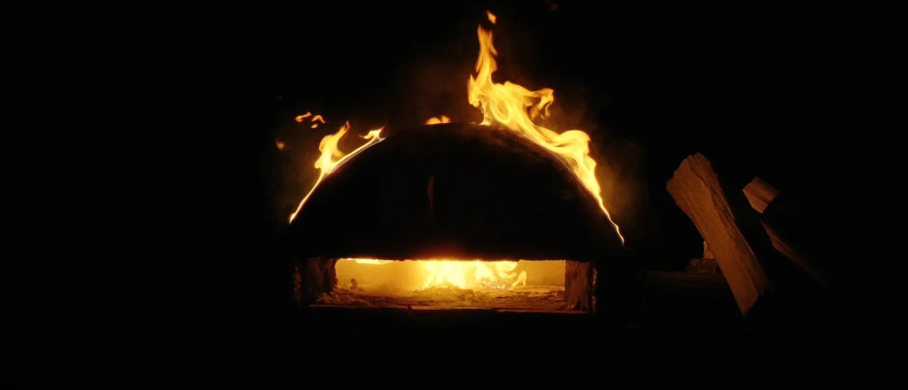
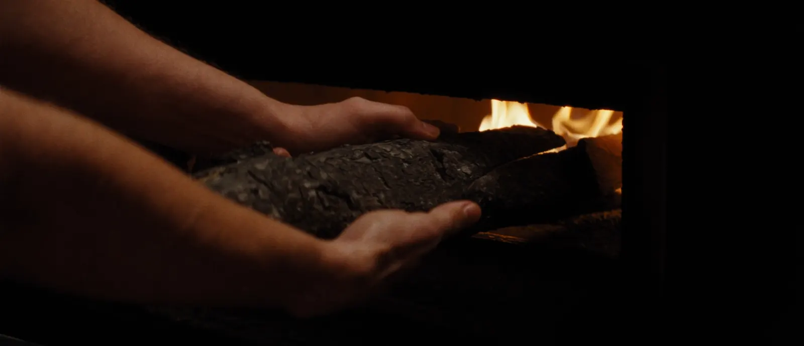
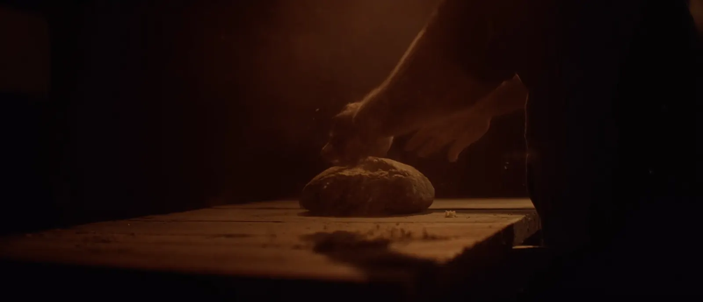
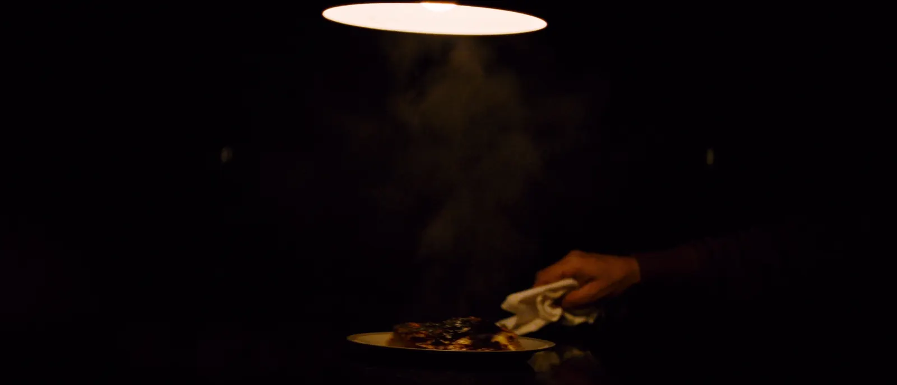
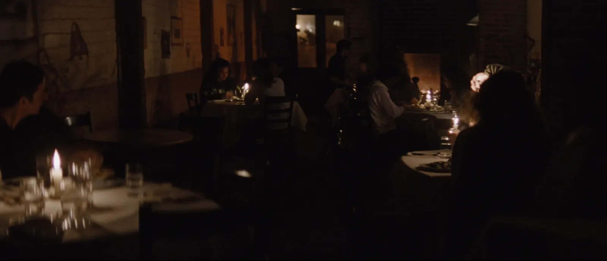
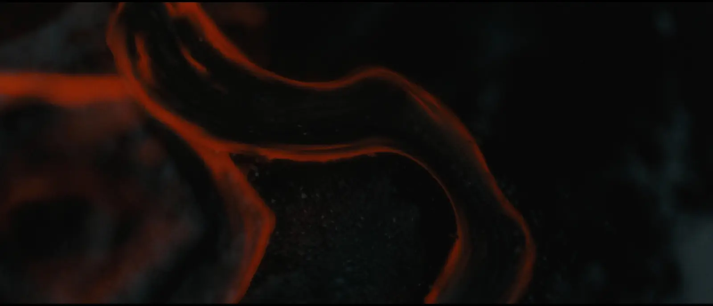

Wood fire · dark rye · open tables
Ember & Rye
One oven, and a menu it decides each morning. No bookings — walk in, the way you'd call on a neighbor. The night runs 17:05 to midnight; scroll and it will pass.

Ironbark in, door shut. The oven takes an hour to say yes, and there is no rushing it.
chapter one — fire

The last loaves are shaped while the room still has its chairs on the tables.
chapter two — rye

First plates over the pass. The lamp is the hottest seat in the house.
chapter three — service

By nine the room hums. Nobody is in a hurry, least of all the oven.
chapter four — the neighborhood
Walk in. The oven is already on.
No bookings for parties under seven — the room is small and we hold it for the street. Larger tables can write to the kitchen; the address below is on the door.
12 Coleman Lane — under the brick chimney, two doors from the laundry.
A fictional address for a fictional restaurant — see how this page was made.

The fire dies at midnight. It is lit again at five.
Ember & Rye — wood fire · dark rye · open tables